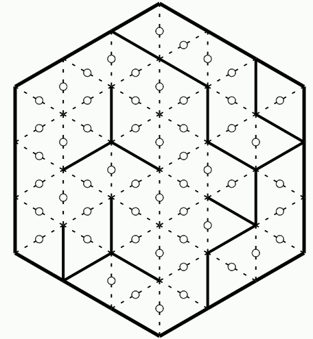
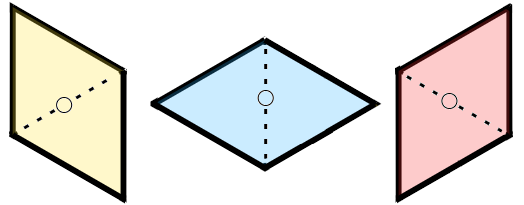

Maximum grid size (Speedy) :
Delay for score display : (s)

The Calisson game is a form of Sudoku, in which you have to add edges one by one to a hexagonal grid to go from an initial figure to a final figure:
 ⇒
⇒


the final figure is unique because it represents :
In a large cubic room, we stack small cubic boxes, pushing them into the room as far as possible, the stacks increasing in height towards the back walls.
Example of cube stacking in a size 4 room :
The final figure is then composed of the edges of the walls of the room and the visible edges of the small cubes.
A calisson is formed by joining two equilateral triangles having a common side.
There are three types of calisson, with different orientations, shown here :

The edges to be drawn in solid lines delimit areas entirely filled with calissons of the same color :
⇒

Two rules must be observed :
The initial edges cannot be modified, while the positions of the edges to be determined are drawn with a small circle in the middle.
On the computer, missing edges can be drawn by left-clicking on the center of the edge, while coloring a calisson is obtained by right-clicking on the center of the rhombus.
On tablets/telephones/touch screens, touching the middle of an edge causes the edge to be drawn or the diamond to be colored, depending on the status of the buttons to the left and right of the play area.The following two rules allow the resolution of all Level 1 grids, whatever their size.
They are, however, insufficient to solve Level 3 problems,
which are all impossible to solve using just these two rules.
Solution of a grid of size 3 using the two previous rules, with all calissons drawn.
Translation of french terms used in the video :
With practice, you can often do without coloring calissons!
In this mode, there's no time limit on the game, and you can choose the size and level of the grids to be solved from a drop-down list (of the form "size.level").
For each grid solved, the score obtained is displayed, and a new grid is proposed.
In the event of a level change, the current grid is abandoned.
When returning to the home page, statistics for the current training session as well as the previous ones are displayed.
This mode lets you put your game skills to the test!
The aim is to achieve the highest possible total score in the shortest possible time, by solving grids of increasing size and difficulty similar to those on the training page (but with different grids!).
To obtain a high score, you must:
The score for each grid increases with its size and difficulty:
In both modes, three buttons can be used to change the flow of the game:
To return to the home screen from the game pages, click on the home button in the top left-hand corner

When playing on a computer, you can draw calissons (or diamonds) by right-clicking on the middle of an edge.
On touch-screen devices where right-clicking is not possible, the game pages display two buttons beside the hexagon, indicating whether pressing on the middle of an edge will draw an edge (left button) or a rhombus (right button). Simply tap one of the buttons to change mode.
The limited screen size of a smartphone can make it difficult to play with large grids. To make it
easier to
play under these conditions, you can set the maximum size of grids to be offered using the drop-down
list
below
the game launch buttons.
The score obtained for each grid increases with this maximum size, so that the duration of the game
remains
more
or less constant.
You can also set the length of time the grid remains displayed (from 0 to 5 seconds) at the end of a resolution, so you can admire your work!
"Speedy Calisson" is inspired by the Calisson game invented by Olivier LONGUET. For a presentation, to learn more about solving techniques and to test yourself against the grids proposed by the author, please visit the original website (in French).
The game zone code has been modified from Arnaud DURAND's original code.
All content is licensed under a Creative Commons CC-BY-SA-NC license.
The source code of this program is available at the following GitHub address :
https://github.com/MartialTarizzo/Calisson-Game
(Unfortunally, most of the comments are in French ;-)
The grids proposed in this game are created automatically using a Python program whose code is available
in
a
GitHub repository
(https://github.com/MartialTarizzo/calisson)
All the puzzles have a single solution (if not, it's an error: don't hesitate to send me an e-mail to
let me
know).
Speedy Calisson HTML pages can be installed as an application on a computer,
tablet or phone.
All you need is a browser that supports this type of installation (Chrome, Edge, Safari, ...), whatever
your
operating system (Windows, MacOS, Linux, Android, iOS).
By navigating to the Speedy Calisson home page (the one you're reading right now!), the browser
allows/proposes
you to install the application. The Speedy Calisson pages will then open in a stand-alone window managed
by
the
browser (or full-screen on a tablet/phone), behaving like a native application.
If the browser you're using doesn't allow you to install an application (for example, Firefox doesn't
allow
you
to do so without adding an extension), you can always create a shortcut to include it in your favorites
or
place
it on your desktop.
Regardless of the method used, when browsing the home page, all the data required for the game to
function
is
cached by the browser to enable the application to be used, even in the event of loss of
internet connection
Once installed, the application is automatically updated from the network when an Internet connection is
active.
contact : martial.tarizzo (at) gmail . com
(Version 2.14.2)